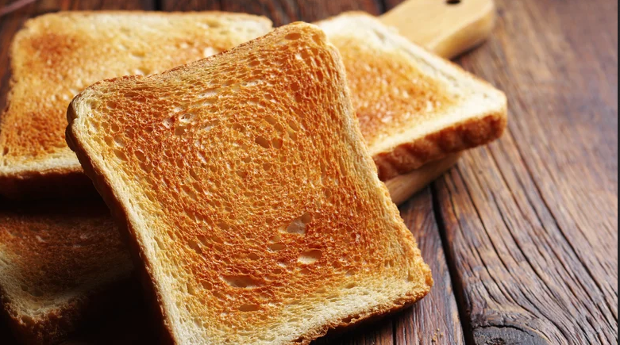

Return to Home
Toast: The Best Thing Since Sliced Bread

Toasty toast is the most toast!
Toast is like bread but better. Funny little fact, the name toast comes from
the process of toasting the bread to convert the bread into toast!
Ingredients and Tools needed:
- Bread
- Toaster
- OPTIONAL:Butter to make it buttery good
Steps:
- Put bread into toaster and depress the toaster button to convert bread into toast.
- Remove newly converted toast. Be Careful! The conversion process results in
heat that could burn your fingers
- OPTIONAL: You may introduce butter onto toast surface with a
butter knife for buttery toasty goodness.